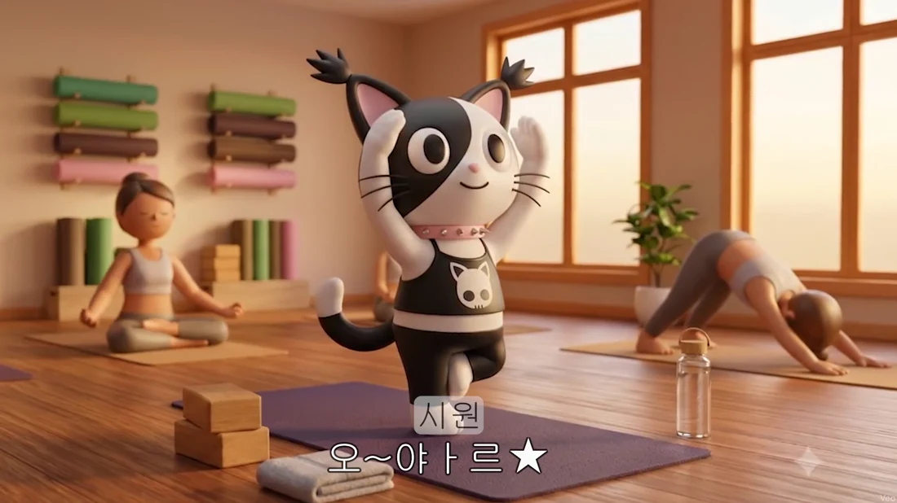
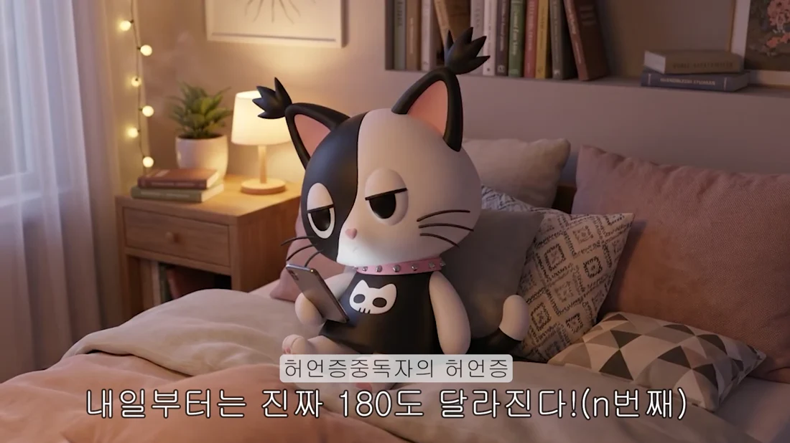
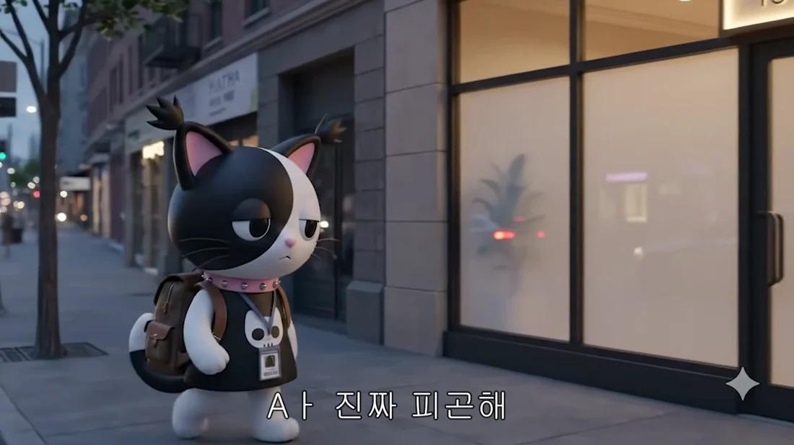
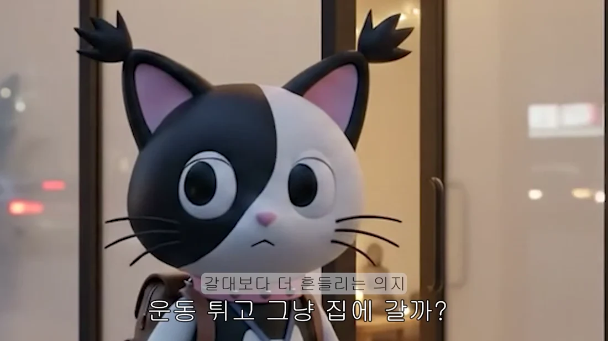
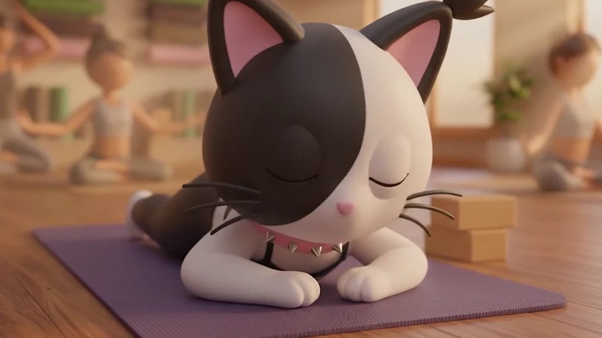

길어지던 대본을 하루의 이야기로
헬스장 결제에서 출발했던 이야기를 하타요가로 좁혔습니다. Flow 크레딧이 부족해지자 기존 침실 장면을 살리고, 새로 만들 장면은 요가를 중심으로 6컷 대본에 압축했습니다.
VIDEO · AI CHARACTER COMEDY
오늘은 운동하고 남은 저녁도 알차게 써야지. 그렇게 요가센터 문을 열었습니다.

OVERVIEW
침대와 스마트폰으로 하루가 끝나는 직장인의 저녁을 치미의 1인칭 브이로그로 만들었습니다. 하타요가를 해낸 뿌듯함과 집에 오자마자 잠드는 반전을 한 저녁 안에 담았습니다.
FINAL FILM
약 39초 · 자막 포함 편집본
STORY

퇴근 후 계획은 많지만 침대에서 휴대폰만 보는 장면으로 익숙한 저녁을 시작합니다.

따뜻한 침실에서 차가운 저녁 거리로 옮겨, 발걸음을 멈춘 치미의 망설임을 보여줍니다.

치미의 시선과 표정을 가까이 잡아 집에 갈지, 한 번 들어가 볼지 고민하는 시간을 줍니다.

직접 요가 자세를 따라 하는 장면으로, 시작이 어려웠던 치미가 작은 성취감을 느끼는 순간을 담았습니다.

움직임이 멈추는 매트 장면으로 호흡을 한 박자 늦춰 반전을 준비합니다.

다시 침실로 돌아왔을 때 치미는 이미 깊이 잠들어 있습니다. 부지런해진 저녁을 기대하게 한 뒤 곧바로 잠든 모습으로 마무리합니다.
MESSAGE
PROBLEM SOLVING
헬스장 결제에서 출발했던 이야기를 하타요가로 좁혔습니다. Flow 크레딧이 부족해지자 기존 침실 장면을 살리고, 새로 만들 장면은 요가를 중심으로 6컷 대본에 압축했습니다.
치미의 얼굴 무늬와 의상, 체형을 기준으로 두고 장면마다 배경·조명·소품을 지정했습니다. 같은 공간에서는 표정과 요가 자세의 변화에 집중했습니다.
수면 컷은 카메라를 고정하고, 치미가 이미 잠든 상태에서 시작하도록 바꿨습니다. 호흡과 코골이를 중심으로 지시해 운동 후의 성취감에서 잠든 모습으로 곧바로 넘어갑니다.